포트폴리오를 위한 비공식 개인 리디자인입니다. TJ미디어의 의뢰나 승인을 받지 않았으며 TJ미디어와 무관합니다.
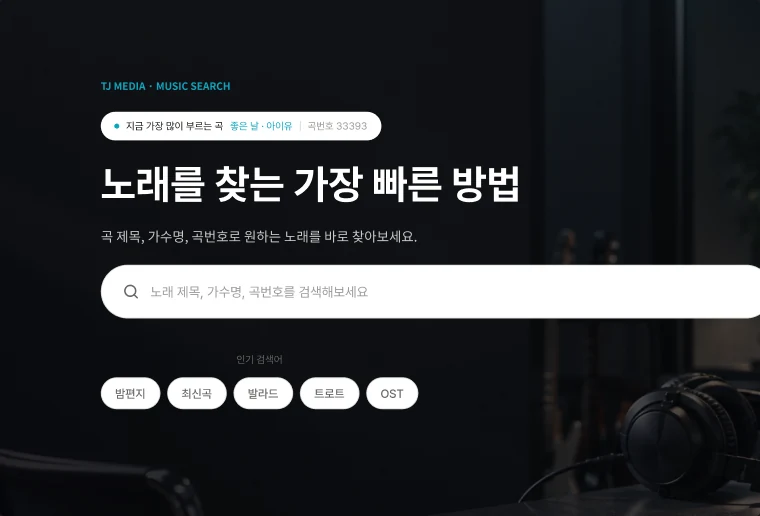
02Project Overview
노래방 기기·콘텐츠 브랜드의 음악 탐색 서비스
TJ미디어는 노래방 기기·콘텐츠를 제공하는 기업의 공식 웹사이트다. 이번 리디자인은 사이트의 역할과 목표를 다시 정리하는 데서 출발했다.
Service노래방 기기·콘텐츠를 제공하는 TJ미디어의 공식 웹사이트
Core User원하는 곡을 빠르게 찾고 신곡·인기곡을 탐색하는 일반 이용자
Key Actions노래 검색 · 신곡/인기차트 탐색 TJ 서비스 및 콘텐츠 접근
Redesign Goal곡 검색을 중심 경험으로 재구성하고 사진·앨범 아트 중심으로 탐색 경험을 강화
Project Type
Personal Redesign
Duration
DESIGN SPRINT7 DAYS
Role
UX Research · UX/UI Design · Visual Design
Tools
Figma · Gemini Notebook · ChatGPT · Claude
03Research & As-Is Analysis
검색 진입점 없는 홈 흩어진 콘텐츠 구조
TJ미디어 공식 홈페이지(tjmedia.com)를 2026-09-20에 직접 방문해 검색 진입 구조와 콘텐츠 우선순위를 확인했다.
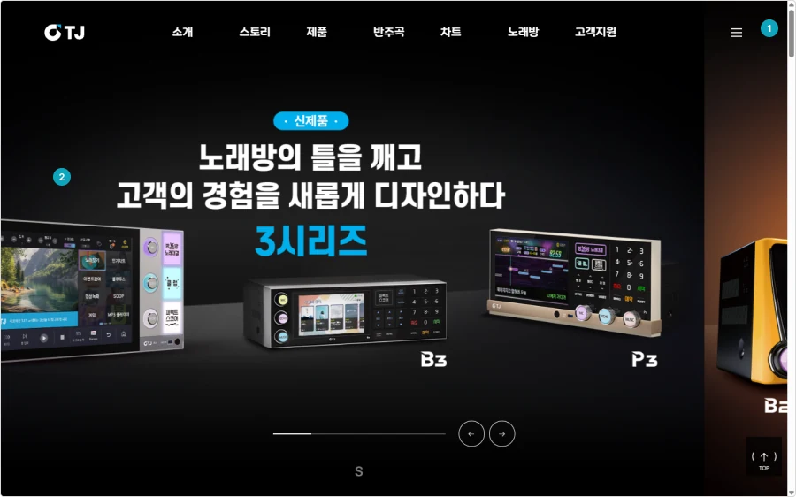
tjmedia.com 홈페이지, 2026-09-20 캡처. 리디자인 대상의 현재 구조를 분석하기 위해 인용했으며 화면의 권리는 TJ미디어에 있습니다.
홈페이지 실사 (2026-09-20)
01 검색 아이콘 없음
헤더에 검색창과 아이콘이 없고 GNB 7개 항목만 나열된다.
02 제품 광고 Hero
첫 화면 전체가 신제품 광고 배너이고 음악 콘텐츠는 없다.
03 검색은 하위 페이지에
곡 검색은 반주곡 페이지의 퀵메뉴 아이콘으로만 도달한다.
01
검색 진입점이 보이지 않는 홈
EVIDENCE
홈 헤더·Hero에 검색창 없음(tjmedia.com)
OBSERVATION
곡 검색은 반주곡 퀵메뉴 아이콘을 거쳐야 도달
UX IMPACT
핵심 행동(곡 검색) 진입에 불필요한 단계가 있음
→ SECTION 05
검색 우선순위
02
제품 광고가 차지한 첫 화면
EVIDENCE
홈 Hero 전체가 신제품 하드웨어 광고 배너로 구성
OBSERVATION
음악 콘텐츠 없이 브랜드 스토리가 이어짐
UX IMPACT
제품·브랜드 스토리가 음악 탐색보다 우선함
→ SECTION 05
정보 위계
03
한 줄에 섞인 콘텐츠와 서비스
EVIDENCE
GNB 7개 항목 동일 무게, 푸터에 B2B 링크 혼재
OBSERVATION
음악·제품·기업 정보가 구조적으로 안 나뉨
UX IMPACT
원하는 콘텐츠를 찾으려면 전체 메뉴를 훑어야 함
→ SECTION 05
콘텐츠·서비스 구조
04
제품 카탈로그에 가까운 톤
EVIDENCE
다크 배경·제품 사진·마케팅 카피 중심 구성
OBSERVATION
기기 브랜드 느낌은 있으나 탐색 에너지는 약함
UX IMPACT
능동적 음악 탐색을 유도하는 시각 신호가 부족함
→ SECTION 05
브랜드 표현
04User & Pain Points
사용자 관점에서 다시 정의한 핵심 문제
사용자의 이용 맥락과 행동을 정의하고, 기존 서비스에서 발생하는 핵심 불편을 정리했다.
Representative image · AI-generated
Proto Persona
Based on service context & As-Is analysis
노래방에서 부를 곡을 빠르게 찾고, 새로운 곡도 자연스럽게 탐색하는 사용자
Context노래방 방문 전 / 이용 중
Goal빠르게 부를 곡을 결정
Behavior곡명·가수명 검색 → 곡번호 확인 → 다음 곡 탐색
Needs빠른 검색 / 명확한 곡번호 / 자연스러운 음악 발견
Frustration검색 진입이 늦음 / 음악보다 제품·기업 정보가 먼저 보임
Key Pain Points
01
Search Access
검색 진입점이 보이지 않는다
02
Content Priority
음악 탐색보다 제품·기업 정보가 먼저 보인다
03
Discovery
곡과 음악 콘텐츠를 탐색하게 만드는 시각적 단서가 부족하다
05UX Strategy
문제에서 전략으로 전략에서 화면으로
4가지 문제에 각각 대응하는 전략을 세우고, 이를 실제 화면 구조로 옮겼다.
01
Search
Problem
검색 진입 우선순위 부족
→
SEARCH-FIRST
Hero에서 바로 검색 · Search → Result → Detail
02
Hierarchy
Problem
음악과 제품 정보의 우선순위 혼재
→
MUSIC-FIRST
Hero → 신곡 → 인기차트 → 서비스
03
Structure
Problem
목적이 다른 콘텐츠가 한 구조에 혼재
→
DEDICATED PAGES
Search / Latest / Chart / Detail / Request
04
Visual
Problem
음악 탐색을 유도하는 시각적 신호 부족
→
PHOTOGRAPHY-LED
Photography / Album Art / Contrast
06Information Architecture
단일 화면 대신 전용 화면으로 나눈 구조
음악 탐색의 주요 목적에 따라 6개의 핵심 화면으로 정보 구조를 재구성했다.
IA 재구성 기준 — 이번 실사에서 확인한 GNB와 곡 검색 접근 구조를 기준으로, 핵심 음악 탐색 경험 중심으로 IA를 재구성했다.
HOME
Search
Latest Songs
Music Chart
Song Detail
Song Request
기업정보 (Entry Link)
Search
Keyword Search
Search Filter
Genre Filter
Search Result
Song Detail
검색 결과에서 곡 상세로, 곡 상세에서 다시 관련 곡으로 — 탐색이 끊기지 않고 이어진다.
07User Flow
검색에서 결과 확인까지 끊기지 않는 흐름
가장 중요한 사용자 흐름인 검색 흐름을 중심으로 화면 간 연결을 설계했다.
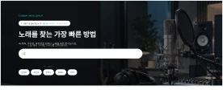
01 HOME
Hero에서 검색 시작
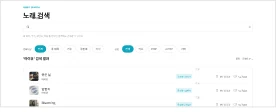
02 SEARCH
검색어 및 조건 입력
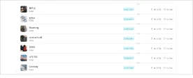
03 RESULT
곡 정보 확인
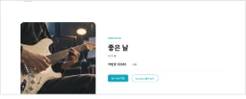
04 DETAIL
곡 상세 및 다음 행동
Save to My TJ / YouTube
08Visual Direction
Photography-led 이미지가 이끄는 음악 탐색 경험
실제 사진과 앨범 아트를 중심에 두고, 어두운 Hero와 밝은 콘텐츠 영역의 대비로 검색과 음악 탐색을 돕는다. 타이포그래피와 컬러는 기존 시스템을 그대로 유지한다.
Typography
HeadingAa 안녕하세요
Sub HeadingAa 안녕하세요
BodyAa 안녕하세요
CaptionAa 안녕하세요
Colors
Primary Black#1A1A1A
White#FFFFFF
Light Gray#F2F2F2
Cyan Accent#0EA5BE
Visual Principle
Imagery사진 기반 Hero · 실제 앨범 아트 · 장식 요소 최소화
Dark / Light ContrastDark Hero → White Content → Dark Chart → White Service
Cyan Usage검색 · CTA · Ranking 등 제한적 Accent
Design Decisions
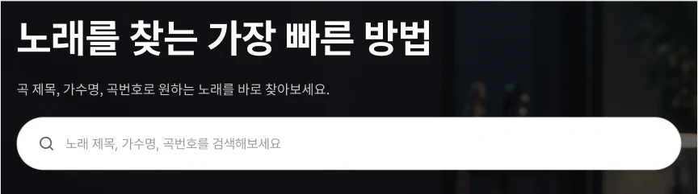
01
SEARCH-FIRST
검색을 진입 즉시 만나는 첫 번째 핵심 행동으로 배치했다.
곡 제목 / 가수명 / 곡번호를 첫 화면에서 바로 검색할 수 있도록 구성했다.
Search → Result → Detail
02
PHOTOGRAPHY-LED
기능 중심 화면에서 벗어나 음악과 아티스트를 발견하는 경험으로 전환했다.
FROM Function-centered
TO Music & Discovery-centered
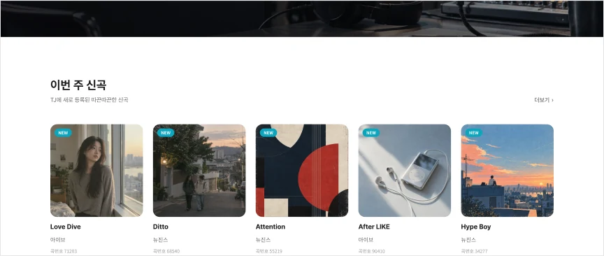
03
TJ IDENTITY
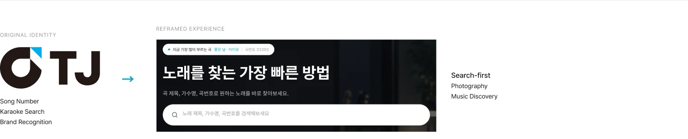
09Exploration & Iteration
최종안이 나오기까지의 중간 과정
메인 리디자인은 Hero와 신곡 두 단계의 시안을 거치며, 장식 중심 표현에서 콘텐츠 중심 UI로 이동했다.
01Hero
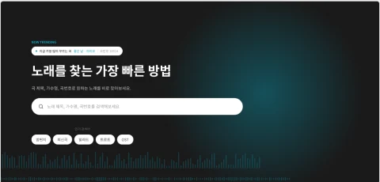
Hero 초기 시안
최종 Hero (Section 10)
TRY
Dark Hero에 Cyan Spotlight와 Waveform 장식을 적용해 검색 중심 구성을 먼저 테스트
ISSUE
장식 그래픽만으로는 음악 서비스라는 인상이 약하고, 검색창과 배경이 같은 톤이라 시각적으로 묻힘
DECISION
장식 효과를 모두 제거하고 스튜디오 사진을 Hero 전체 배경으로 적용, 어두운 오버레이로 텍스트·검색창 가독성 확보
RESULT
→ SECTION 10: 사진 기반 Hero 위에서 헤드라인과 검색창이 가장 먼저 읽히는 검색 중심 Hero
02신곡 · 앨범 아트
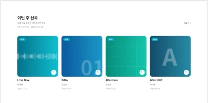
신곡 초기 시안 (카드 4장)
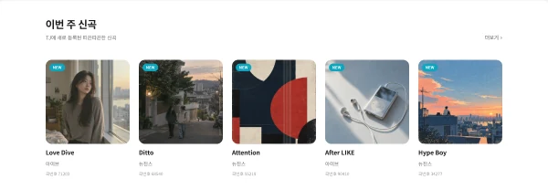
최종 신곡 (카드 5장)
TRY
웨이브폼·큰 숫자·그리드·레터 등 4가지 그래픽 패턴을 카드 아트워크로 테스트
ISSUE
추상 패턴은 곡별로 즉시 구분되지 않고, 4장 카드와 기존 카드 폭으로는 5곡을 한 줄에 균형 있게 보여주기 어려움
DECISION
추상 패턴 대신 실제 사진·앨범 아트를 적용하고, 카드 폭을 282→221로 압축해 5곡을 한 줄에 배치
RESULT
→ SECTION 10: 이미지로 곡을 즉시 구분할 수 있는 5장 카드
10Main Experience
Dark Hero에서 콘텐츠 탐색까지 하나의 흐름으로
사진 기반 Dark Hero에서 시작해 신곡·인기차트 탐색과 서비스 연결까지 이어지는 흐름을 하나의 화면에 담았다.
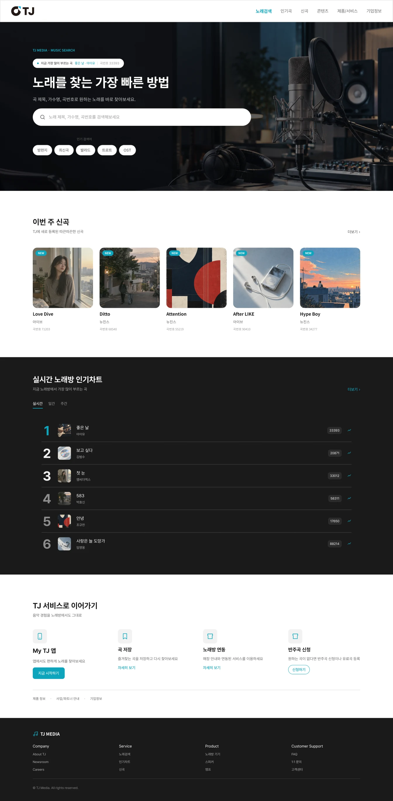
01
검색 중심 Dark Hero
사진 기반 Dark Hero에 검색바를 배치하고, 어두운 오버레이로 가독성을 확보했다.
02
신곡 & 인기차트
다크 → 화이트 → 다크 리듬으로 신곡과 인기차트를 구분해, 검색 목적이 없어도 자연스럽게 탐색한다.
03
서비스 진입
My TJ·곡 저장·노래방 연동·반주곡 신청을 한 곳에 모아 다음 행동으로 연결한다.
11Search & Discovery Flow
검색 결과와 곡 상세, 실제 화면 구현
Search Result와 Song Detail, 두 화면의 실제 UI 구현을 정리했다.
Detail 화면 상세 — 검색 결과의 가독성과 탐색 일관성
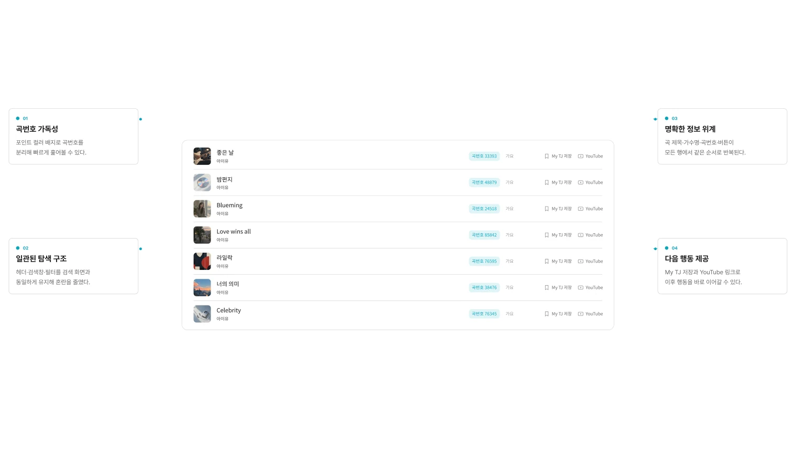
Detail 화면 상세 — Search Result → Song Detail 연결
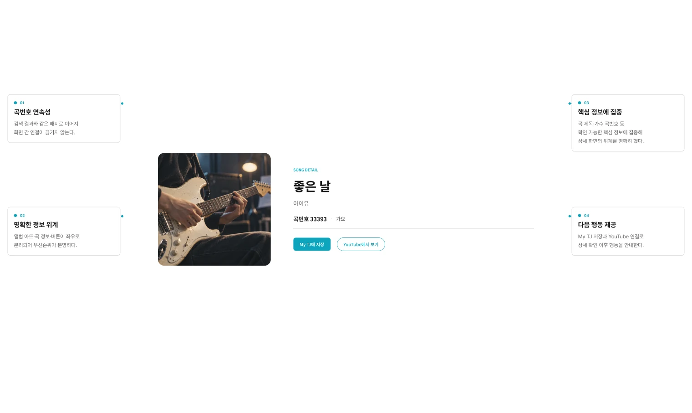
12Final Screens
완성된 화면으로 이어진 음악 탐색 경험
메인부터 검색·신곡·인기차트·곡 상세·반주곡 신청까지, 핵심 기능을 하나의 시각 언어로 확장했다.
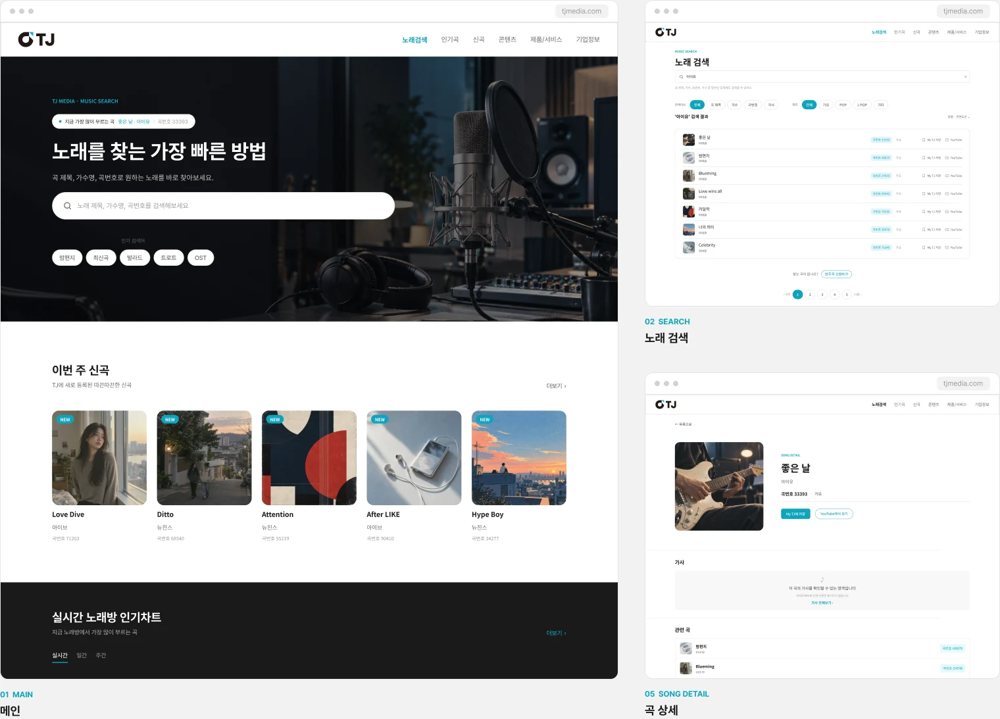
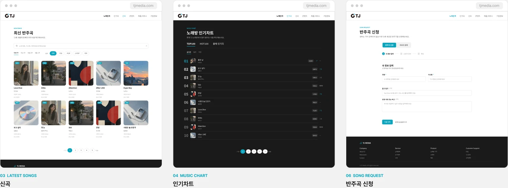
13Mobile Experience
작은 화면에서도 이어지는 검색과 음악 탐색
Desktop의 정보 구조를 유지하면서 검색·탐색·곡 상세 흐름을 Mobile에 맞게 재구성했다.
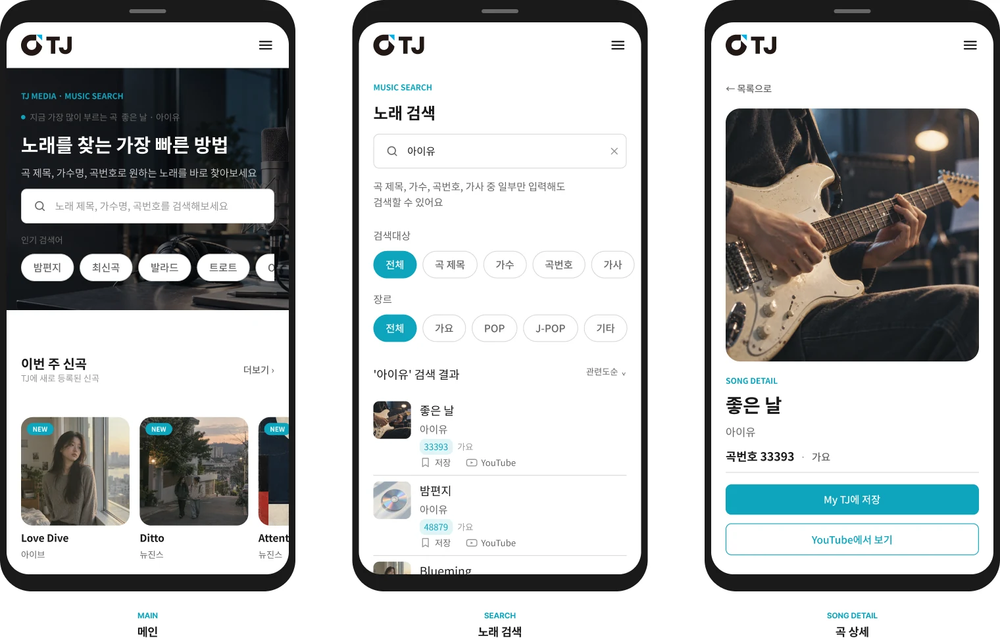
14Outcome & Reflection
검색 중심의 경험으로 TJ미디어를 다시 구성하며
이번 프로젝트에서 설계한 범위와 리디자인 과정에서 얻은 핵심 판단을 정리한다.
작업 결과
Desktop
6개 화면
Mobile
3개 화면
Core Flow
검색 → 검색 결과 → 곡 상세
노래 검색을 중심으로 메인·신곡·인기차트·곡 상세·반주곡 신청까지 하나의 탐색 경험으로 연결했다.
배운 점
01 핵심 기능의 우선순위
화면의 인상보다 사용자가 먼저 할 행동을 드러내는 것이 중요했다.
02 콘텐츠가 만드는 시각 경험
실제 사진과 앨범 아트가 추상적 장식보다 콘텐츠를 더 분명히 구분했다.
03 Desktop과 Mobile의 차이
구조를 그대로 줄이는 대신 Mobile의 탐색 흐름에 맞게 다시 구성했다.
15Closing
검색 경험과 콘텐츠 탐색 구조를 중심으로 TJ미디어의 웹 경험을 재구성했다.
TJ MEDIA Website Redesign — 검색 중심 · 이미지가 이끄는 음악 탐색 경험
이 프로젝트는 포트폴리오를 위한 비공식 개인 리디자인이며 TJ미디어와 무관합니다. TJ 로고와 현행 사이트 캡처는 리디자인 대상을 밝히고 분석 내용을 설명하기 위해 실었고, 그 상표와 화면의 권리는 TJ미디어에 있습니다. 화면에 쓰인 사진과 인물 이미지는 직접 생성한 AI 이미지로, 실제 음반·인물과 관련이 없습니다.
EXPLORE THE REDESIGN
TJ MEDIA Interactive Demo
최종 UI를 실제 HTML/CSS 화면으로 옮겼습니다. 검색에서 곡 상세까지 직접 이동해 보세요.